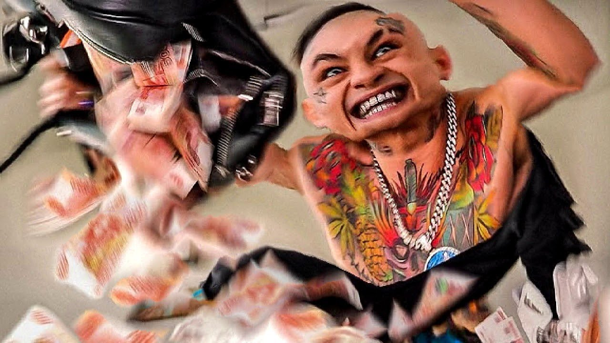

Самый выдающийся рэпер 21 века

Лучшие треки моргенштерна
Смотреть сюда
- Cadillac
- ARISTOCRAT
- Дуло
- PABLO
- Yung Hefner
- Новый Мерин
- Уфф...Деньги...
Основная информация
Алише́р Таги́рович Моргенште́рн (урожд. — Вале́ев[к 1]; род. 17 февраля 1998, Уфа), более известный мононимно как Моргенште́рн (англ. Morgenshtern[к 2]), — российский рэп- и поп-исполнитель, музыкант, шоумен[2].Первую известность получил в 2018 году как автор пародий на популярных музыкальных исполнителей того времени, публиковал выпуски данного шоу на YouTube. Через некоторое время отказался от данного формата и начал выпускать только авторские музыкальные релизы.Основной инструмент продвижения Моргенштерна — эпатаж[3]. Его первыми известными выходками стали: поджог ста тысяч рублей; сообщения об удалении своего канала YouTube и другие
©Палазник Арсений Викторович